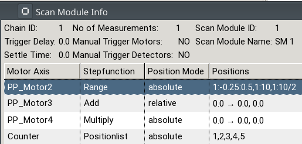

Release Notes
Version 1.30.3 (2019-01-xx)
- [Bug Fix-#4224] the icon of the auto play button has been replaced by colored text (red=inactive, green=active)
- [Bug Fix-#4390] warn if a scan is added to the play list but auto play is deactivated
Version 1.30.2 (2018-12-12)
- [Bug Fix-#4390] warn (show confirmation dialog) if auto play is deactivated when starting a scan but the play list is not empty or repeat count is positive
- [Bug Fix-#4390] warn (show confirmation dialog) if auto play is being deactivated but the play list is not empty or repeat count is positive
Version 1.30.0 (2018-11-22)
- [Feature-#3886] Scan Module Info Dialog of the Engine View now shows position modes of used axes:

- [Bug Fix-#4131] fixed a bug where a memory leak could occur due to unclosed listeners after closing a plot window
Version 1.29.4 (2018-06-12)
- [Bug Fix-#3948] fixed a bug where range stepfunction motor axes were not shown in the Scan Module Info Dialog of the Engine View
Version 1.29.2 (2017-01-25)
- [Bug Fix-#2594] fixed a bug where PVs could not be edited (Device Inspector/Options View) due to wrong listener responses (read only status)
Version 1.29.1 (2018-01-17)
- [Bug Fix-#3816] fixed a bug where the plot auto scale entered an infinte loop when its first sample had a magnitude greater 15
Version 1.28.3 (2017-01-25)
- [Bug Fix-#2594] fixed a bug where PVs could not be edited (Device Inspector/Options View) due to wrong listener responses (read only status)
Version 1.28.2 (2018-01-04)
- [Bug Fix-#3439] fixed a bug where an auto connect was made although the engine start process failed
- [Bug Fix-#3621] fixed a bug where the confirm save dialog (asking to keep the data file) blocked the engine
- [Bug Fix-#3577] fixed a bug where an error occurred due to messages send to an already closed messages view
Version 1.28.0 (2017-07-28)
- [Feature-#2986] added timestamp to engine live comment in HDF5 file
- [Feature-#2838] added „add all/remove all” buttons to global device inspector
- [Feature-#0179] introduced inversion of y axes in the plot window
- [Feature-#0015] added table column to playlist view showing when the scan was added
Version 1.27.13 (2017-07-06)
- [Bug Fix] fixed a bug where executing a scan containing a float type detector caused a conversion error
Version 1.27.10 (2017-04-19)
- [Bug Fix] fixed a bug that lead to a potential memory leak in the Devices View.
Version 1.27.5 (2017-02-02)
- [Bug Fix] added known bugs entry (and workaround) for: although a scan description in the editor is unsaved the File -> Save menu entries are not enabled
- [Bug Fix] fixed the shell position for the info dialogs of the engine view
Version 1.27.4 (2016-12-21)
- [Bug Fix] fixed a bug where the scan module info dialog did not open if the scan module contained interval channels (interval channels are now shown in a separate table instead)
Version 1.27.3 (2016-12-12)
- [Bug Fix] fixed a bug where a concurrent modification could occur due to missing synchronization of the playlist controller
- [Bug Fix] fixed a bug where the Engine View did not behave properly due to bad listener registration timing when auto connecting to the engine after a scan description was received
Version 1.27.1 (2016-11-09)
- [Bug Fix] fixed a bug where the progress bar did not show any progress when connecting to an engine already running a scan (until a new scan was loaded)
Version 1.27.0 (2016-11-09)
- [Feature] the playlist can now be saved into a file
- [Bug Fix] fixed a bug where subsequent connects to the engine failed (GUI stopped refreshing) if a scan was already loaded
Version 1.26.1
- [Bug Fix] fixed a bug where engine view (status table, plot) was not refreshed anymore due to improper initialization after a reconnect
Version 1.26.0
- [Feature] introduced Global Device Inspector (Device Inspector which is visible in each Perspective)
- [Feature] The Device Inspector now allows to select and remove multiple entries at once
- [Feature] set default value of PV Update Interval to one second
- [Bug Fix] fixed a bug where the motor status color did not change if in limit position
- [Bug Fix] fixed a bug where the GUI stopped refreshing due to a device of type short used in a plot window
- [Bug Fix] fixed a bug where the order of the scan modules in the Engine View table did not match the order they were executed
- [Bug Fix] fixed a bug where the progress bar accidently reported the start of a measurement instead of its completion
Version 1.24
- [Feature] SCML validation errors are now shown in the Messages View
- [Feature] remaining time of a scan (Engine View) is now more "human readable"
- [Feature] introduced optional auto scrolling in Messages View
- [Feature] Messages View content is now being persisted
- [Feature] Messages View Filter Settings are now being persisted
- [Bug Fix] fixed a bug where the progress bar behaved incorrectly
Version 1.23
- [Feature] Display a warning if connecting to an unsupported Engine version
- [Feature] Engine View now always shows all chains and scan modules (even when connecting after a scan has started)
- [Feature] Position/Value Column of Device Inspector is now shown in bold face
- [Feature] new Engine View column: Reason (of Pause)
- [Feature] the Device Inspector now shows soft limit warnings (status column)
- [Bug Fix] fixed a bug where the plot window was not initialized due to wrong device definition handling
Version 1.22
- [Feature] introduced toggle state for (application wide) plot scaling
- [Bug Fix] the MOVING bit in MSTA is no longer considered
- [Bug Fix] plot pdf export now also works with normalized axes
Version 1.21
- [Bug Fix] removed performance issues in the messages View
- [Bug Fix] removed a bug where the epics severity did not refresh properly
- [Bug Fix] fixed time differences when saving the contents of the messages log to file
Version 1.20
- [Feature] The Repeat Count of a scan is now modifiable
- [Bug Fix] fixed a bug where moving motor axes did not change color (EngineView)
- [Bug Fix] fixed a bug where certain dialogs did not close when triggered from another EVE client
Version 1.19
- [Feature] Scan Module Info Window (Engine View) now shows additional information
Version 1.18
- [Feature] The Device Inspector now supports Drag and Drop (moving devices in a table)
- [Feature] Changed plot update behavior: updated only at each 5th point if sample size is in [100, 500] or if 15 seconds are elapsed
- [Bug Fix] Removed a memory leak in the plot causing increasing memory consumption after each plot initialization
- [Bug Fix] fixed a bug where opening a detail dialog of a scan caused an error if certain axis were involved
- [Bug Fix] The Engine View now is able to show more than ten entries
- [Bug Fix] fixed a bug where the sec timer axis did not receive values from the engine (Device Inspector)
Version 1.17
- [Feature] The Engine View now also shows scan module names
- [Bug Fix] fixed reading of PV values of type INT16 (short)
- [Bug Fix] fixed calculation of plot statistics
Version 1.16
- [Feature] the plot view (including statistics) can now be saved as PDF
- [Bug Fix] fixed a bug where the Device Inspector did not recognize if a PV was disconnected.
Version 1.15
- [Feature] added/revised several Help topics
Version 1.14
- [Bug Fix] fixed missing/false plot auto scale behavior
- [Bug Fix] the progress bar no longer shows a position count although no scan is loaded
- [Bug Fix] fixed a bug where a device could not be added to a newly created Device Inspector (see known bugs help section for further details)
- [Bug Fix] fixed some plot code that could create memory leaks
Version 1.13
- [Feature] improved performance of plots
- [Feature] plot statistics are now hideable
- [Bug Fix] the plot widget now expands (and shrinks) with window size
- [Bug Fix] removed a bug where a device with discrete values could be added twice to the device inspector
Version 1.12
- [Bug Fix] fixed a bug where a plot did not draw more than one y axis anymore after updating to CSS v3.1
- [Bug Fix] fixed a bug where process variables of type DBR_Short and DBR_Float could not be read anymore after updating to CSS v3.1
Version 1.11
- [Bug Fix] the Plot View is now shown in all perspectives
Version 1.10
- [Feature] the engine version to be used is now configurable via preferences
- [Feature] the progress of a scan is now shown in a progress bar
- [Bug Fix] fixed a bug where an existing plot window accidently continued drawing points on a new scan (when the same devices where used)
- [Bug Fix] Message dialogs are now shown in a centered position of their parent
Version 1.8
- [Feature] set default plot buffer size to 500
Version 1.7
- [Bug Fix] fixed a bug where a select box for discrete values was editable
Version 1.6
- [Bug Fix] removed a bug where the stop button (for detectors) did not work due to a non-integer value (e.g. ‚Acquire’).
Version 1.5
- [Feature] detectors and channels are now stoppable (via
Device Inspector)
- [Bug Fix] removed a bug where the precision of the plot table entries was incorrect
Version 1.4
- [Feature] new filter dialog for the
Messages view - [Feature] the message type (
Messages view) is now shown as an icon - [Feature] the table in the
Messages view is now sortable by type (the sort state is remembered by the application) - [Feature] limited the size of the table (number of entries) of the
Messages view (for performance reasons)
- [Bug Fix] fixed scrolling issues in the
Messages view - [Bug Fix] removed a bug where an error occurred if new messages arrived while saving them into a file (synchronization)
- [Bug Fix] fixed a bug where a drag and drop added all available devices to the device inspector (not just the ones used in the current scan)
- [Bug Fix] fixed a bug where the channel access configuration depended on the network the application was started from
- [Bug Fix] fixed a bug where the auto play button of the
Engine view wasn’t properly updated if it was changed from another client
Version 1.2
- [Feature] Monitorable Options
- [Feature] Lexicographical ordering in the Devices View (Tree Viewer)
Version 1.1
- [Feature] eveCSS is now based on Control System Studio 3.0.
- [Feature] Added Probe Application.
- [Feature] Added CSS Context Menu allowing „copy pv name to clipboard”. Read more...
- [Feature] Process Variables now have configurable (GUI) update intervals. Read more...
- [Feature] Added menu entry „Window->Reset Perspective” to reset the active perspective. Read more...
- [Feature] Added Filtering to the Local Devices View. Read more...
- [Feature] Added toolbar buttons to expand/collapse all items of the tree (Devices View)